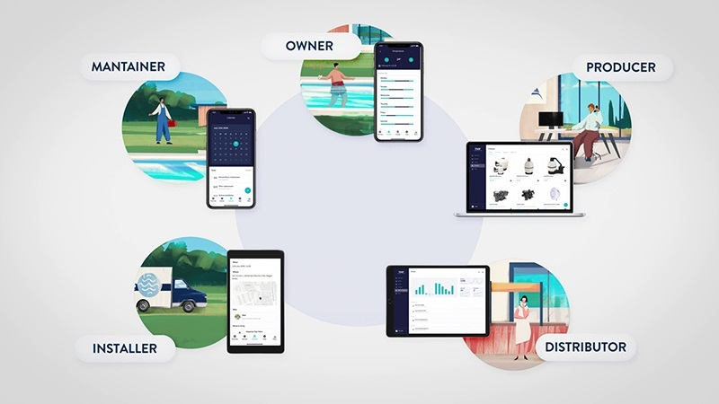

PlugNplay Pool
Challenge B2T
Use case: Digital onboarding user and device

Documentation
Use case description
Onboarding di utenti e registrazione di un device nell'ambito degli impianti di trattamento acque.
How we built it
Tramite l'impiego del Dizme Wallet il Produttore e la sua rete di Distributori potranno assegnare a particolari Installatori selezionati delle Verified Credential di identità e di accreditamento nel network di partner certificati. Tali Installatori potranno poi assegnare delle VC ai dispositivi che installeranno e passarle al Proprietario/Gestore dell'impianto, trasferendogli di fatto l'attestazione della proprietà dell'impianto.
About us
Team: Digital product design di NiEW
- Daniele De Cia daniele.decia@niew.it
- Lorenzo Cellini lorenzo.cellini@niew.it
- Andrea Zambonini andrea.zambonini@niew.it
Market approach and follow up
La proposta punta a migliorare l'esperienza d'uso di onboarding nella piattaforma dei prodotti connessi di una impresa operante nell'ambito dei sistemi di trattamento acque ed è quindi integrabile da subito, all'interno del piano di lancio del prodotto.
Updates and feedbacks